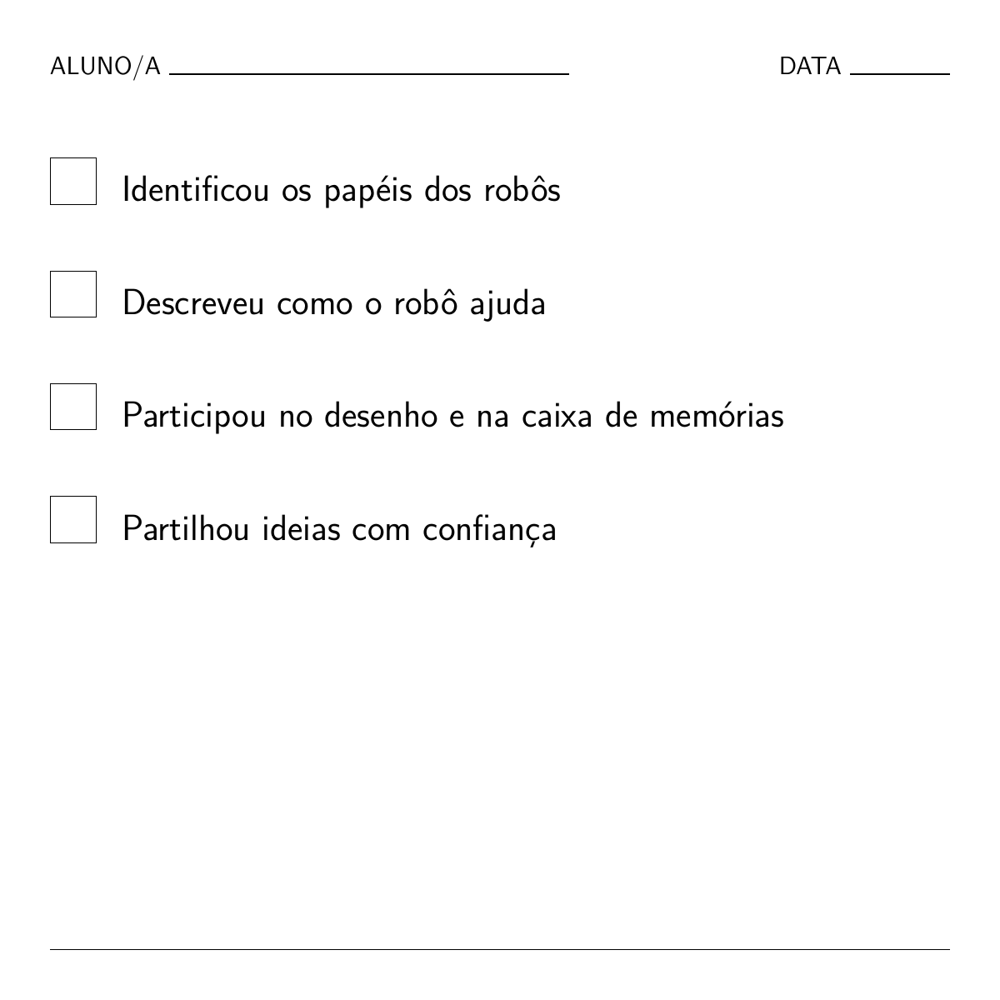

Como a IA aprende e resolve problemas
Nesta oficina, as crianças dos 4 aos 7 anos irão explorar o mundo dos robôs e da IA. Aprenderão que as máquinas são ferramentas úteis, mas precisam de pessoas que as ensinem e lhes deem instruções.
Recursos e transferências
Transfira as versões PDF deste cenário ou os anexos associados.
Documentos de trabalho editáveis
Estes ficheiros editáveis são disponibilizados como documentos de trabalho para os professores.
Grupo-alvo: 4 a 7 anos
Duração da atividade: 2,5 a 3 horas (formato modular)
Principais objetivos de aprendizagem:
- Compreender a IA: Ver a IA como uma ferramenta útil, e não como magia.
- Pessoas e máquinas: Aprender que os robôs precisam de pessoas que os ajudem a aprender.
- Curiosidade: Explorar exemplos reais de assistentes com IA (aspiradores, colunas inteligentes).
- Criatividade: Imaginar e desenhar um robô assistente pessoal.
Resultados de aprendizagem
Os alunos serão capazes de:
CONHECIMENTOS E COMPREENSÃO:
- Começar a compreender o que é um robô ou um assistente com IA.
- Aprender que a IA pode ajudar nas tarefas, mas continua a precisar de pessoas.
- Explorar exemplos reais de utilizações úteis da IA.
COMPETÊNCIAS E CAPACIDADES:
- Narração de histórias e discussão sobre tecnologia.
- Participação em jogos de papéis orientados para compreender como os robôs seguem instruções.
- Desenho e criatividade para expressar ideias.
ATITUDES E VALORES:
- Desenvolver a curiosidade sobre a tecnologia.
- Refletir sobre as diferenças entre pessoas e máquinas.
- Ver a IA como uma ferramenta a utilizar de forma responsável.
Dimensão europeia / ligação ao Erasmus+
- Literacia digital desde cedo: uma introdução significativa aos conceitos tecnológicos.
- Pensamento crítico: Incentivar as crianças a perguntar: «Um robô consegue fazer isto?»
- Inclusão: Utilizar exemplos familiares para tornar a tecnologia acessível a todas as crianças.
1. Recursos e ferramentas
Materiais necessários:
- Fantoche ou robô de brincar.
- Cartões para imprimir: «O robô acerta/erra», «As pessoas sabem melhor».
- Papel de desenho e lápis.
- Vídeo: robôs na vida quotidiana.
- Lista de verificação para avaliação (ver abaixo).
Ligações úteis:
Materiais de apoio à aula:
- Utilize uma grelha de avaliação simples, um fantoche ou robô e o Padlet ou outro quadro para recolher as reflexões finais das crianças.
2. Métodos de trabalho
- Narração de histórias: «O robô que se enganou».
- Jogo de papéis orientado: Representar as tarefas dos robôs.
- Desenho e criatividade: Conceber um robô assistente.
- Reflexão em grupo: Conversas em roda.
Visão geral das atividades
| Fase | Duração | Atividade | Descrição |
|---|---|---|---|
| Introdução | 20 min | Hora da história | «O robô que se enganou»: Conversar sobre os motivos pelos quais o robô se enganou (por exemplo, pôr sapatos no frigorífico) e sobre como as pessoas o ajudam. |
| Investigação | 20–30 min | Assistentes reais com IA | Vídeo e votação: Ver vídeos de robôs (aspiradores, entregas). Votar: «Um robô consegue fazer isto sozinho ou precisa de uma pessoa?» |
| Criação | 30–40 min | Robô assistente e desenho | Jogo de classificação: Esta tarefa é para um robô, uma pessoa ou ambos? Desenho: Inventar o seu próprio robô assistente. |
| Reflexão | 20 min | Conversa em roda | Partilhar os desenhos. Conversar: «O que conseguem fazer os robôs? O que fazem melhor as pessoas?» |
3. Introdução e motivação
História: o robô que se enganou
Objetivo: Despertar a curiosidade e mostrar que os robôs precisam da ajuda das pessoas.
- O ponto de partida: O professor apresenta um fantoche robô que quer ajudar, mas se confunde.
- A história: O robô tenta limpar a cozinha, mas usa champô em vez de sabão! Põe os talheres no congelador e o leite no armário.
- Discussão: «Porque é que o robô se confundiu?» «Como é que as pessoas sabem melhor?»
4. Investigação e aprendizagem
Explorar assistentes reais com IA
Vídeo: Ver «SciShow Kids: Robots Helping Humans» (ou um vídeo semelhante).
Discussão:
- «Já viram um aspirador robô? Consegue encontrar as vossas meias perdidas?» (Não, só limpa.)
- «Uma coluna inteligente consegue dar-vos um abraço?» (Não, só consegue pôr música.)
Atividade: Mostrar cartões com diferentes tarefas. As crianças votam com o polegar para cima ou para baixo: «Um robô consegue fazer isto bem?»
5. Aplicação criativa
Atividade: robô assistente ou tarefa humana?
Jogo de classificação: O professor mostra cartões com tarefas (por exemplo, «Arrumar o quarto», «Dar um abraço», «Pintar um quadro»). As crianças deslocam-se para os cantos da sala identificados como Robô, Pessoa, ou Ambos.
Tarefa de desenho: conceber o seu robô
As crianças desenham um robô que ajuda alguém a fazer algo útil.
- Pergunta: «O que faz bem o vosso robô?» (Por exemplo, transportar objetos pesados.)
- Pergunta: «Em que precisa de ajuda?» (Por exemplo, saber para onde ir.)
6. Reflexão e avaliação
Conversa em roda
As crianças partilham os seus desenhos. A turma cria uma «caixa de memórias», acrescentando desenhos que mostram como a IA as ajudou hoje.
Lista de verificação para avaliação
Os professores podem utilizar esta lista simples para observar a compreensão:


Esta obra está licenciada ao abrigo da Licença Internacional Creative Commons Atribuição 4.0.